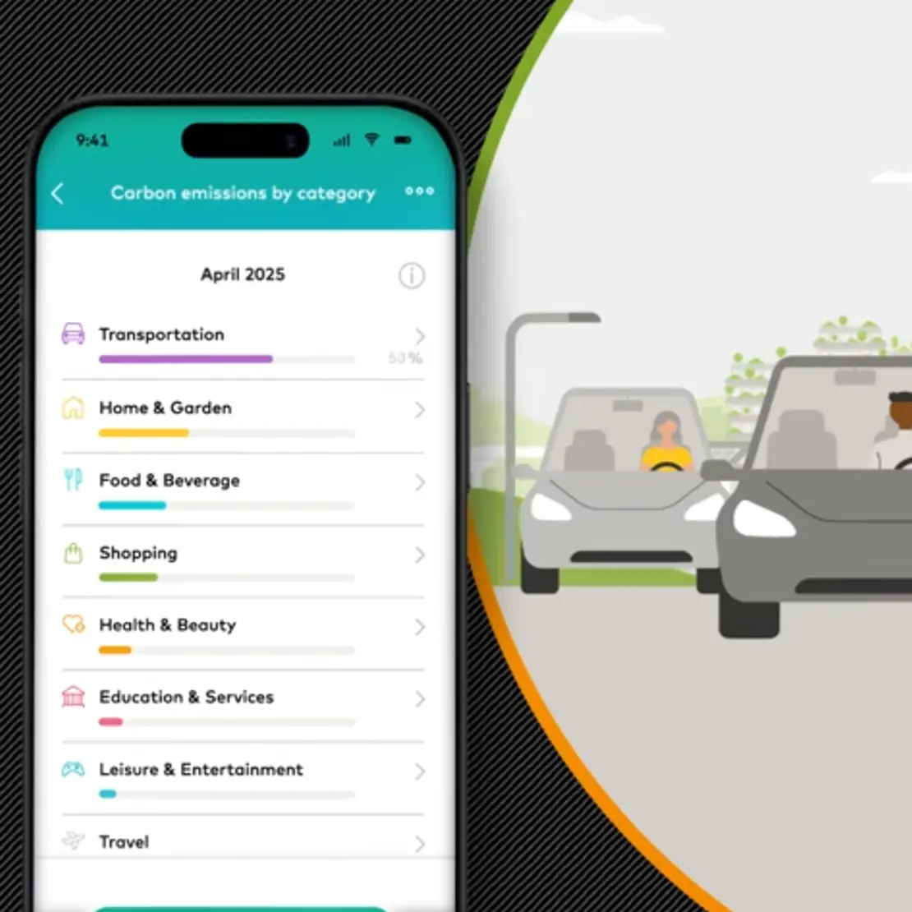

The Carbon Calculator is a cornerstone of Mastercard's commitment to sustainability and the UN Sustainable Development Goals (SDGs). This mobile-first application allows cardholders to monitor the estimated carbon footprint of their purchases in real-time. By synchronizing transaction data with environmental impact metrics, the app provides users with immediate feedback on their CO2 emissions and actionable advice on how to reduce their environmental footprint. I was responsible for bringing the high-fidelity prototypes to life, ensuring a seamless and educational user journey.
As the Senior Frontend Developer and UI Lead, I translated complex environmental data into an intuitive mobile experience:
This project highlighted my transition into modern JavaScript frameworks and mobile-first development: